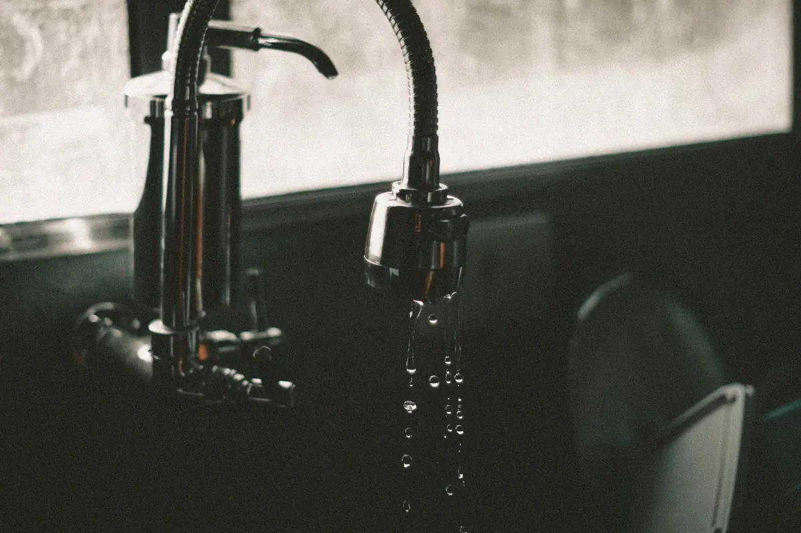

Leak guide
Water leak: what to do in the first 5 minutes
Six steps that limit the damage until a plumber arrives. Tick them off as you go.

Illustrative photo, PexelsProgress0 of 6 done
Water stopped, area safe?
Now call a plumber. Call (903) 330-0390 (Mon to Fri 8 to 4:30 Central) or leave a message.
Now call a plumber. Call (903) 330-0390 (Mon to Fri 8 to 4:30 Central) or leave a message.
Smell of gas? Leave the house and call 911 and your gas utility. This guide is general safety information, not professional advice for your specific situation.
Leak under control?
Call us during business hours, or leave a message and we call you back.